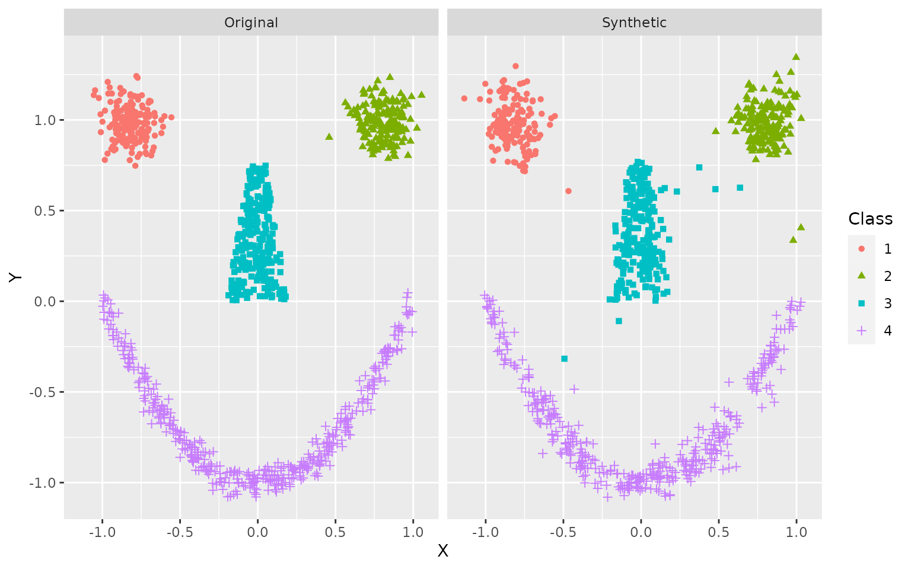

The first step of the arf pipeline is to fit an
adversarial random forest (ARF). The ARF algorithm is an iterative
procedure. In the first instance, we generate synthetic data by
independently sampling from the marginals of each feature and training a
RF to distinguish original from synthetic samples. If accuracy is
greater than \(0.5 + \delta\) (where
delta is a user-controlled tolerance parameter, generally
set to 0), we create a new dataset by sampling from the marginals within
each leaf and training another RF classifier. The procedure repeats
until original and synthetic samples cannot be reliably distinguished.
With the default verbose = TRUE, the algorithm will print
accuracy at each iteration.
# Load libraries
library(arf)
library(data.table)
library(ggplot2)
# Set seed
set.seed(123)
# Train ARF
arf <- adversarial_rf(iris)
#> Iteration: 0, Accuracy: 89.9%
#> Warning: executing %dopar% sequentially: no parallel backend registered
#> Iteration: 1, Accuracy: 44.3%The printouts can be turned off by setting
verbose = FALSE. Accuracy is still stored within the
arf object, so you can evaluate convergence after the fact.
The warning appears just once per session. It can be suppressed by
setting parallel = FALSE or registering a parallel backend
(more on this below).
# Train ARF with no print outs
arf <- adversarial_rf(iris, verbose = FALSE)
# Plot accuracy against iterations (model converges when accuracy <= 0.5)
tmp <- data.frame('acc' = arf$acc, 'iter' = seq_len(length(arf$acc)) - 1)
ggplot(tmp, aes(iter, acc)) +
geom_point() +
geom_path() +
geom_hline(yintercept = 0.5, linetype = 'dashed', color = 'red') We find a quick drop in accuracy following the resampling procedure, as desired. If the ARF has converged, then resulting splits should identify fully factorized leaves, i.e. subregions of the feature space where variables are locally independent.
For density estimation tasks, we recommend increasing the default
number of trees. We generally use 100 in our experiments, though this
may be suboptimal for some datasets. Likelihood estimations are not very
sensitive to this parameter above a certain threshold, but larger models
incur extra costs in time and memory. We can speed up computations by
registering a parallel backend, in which case ARF training is
distributed across cores using the ranger package. Much
like with ranger, the default behavior of
adversarial_rf is to compute in parallel if possible. How
exactly this is done varies across operating systems. The following code
works on Unix machines.
# Register cores - Unix
library(doParallel)
registerDoParallel(cores = 2)Windows requires a different setup.
# Register cores - Windows
library(doParallel)
cl <- makeCluster(2)
registerDoParallel(cl)In either case, we can now execute in parallel.
# Rerun ARF, now in parallel and with more trees
arf <- adversarial_rf(iris, num_trees = 100)
#> Iteration: 0, Accuracy: 90.33%
#> Iteration: 1, Accuracy: 41.67%The result is an object of class ranger, which we can
input to downstream functions.
The next step is to learn the leaf and distribution parameters using forests for density estimation (FORDE). This function calculates the coverage, bounds, and pdf/pmf parameters for every variable in every leaf. This can be an expensive computation for large datasets, as it requires \(\mathcal{O}\big(B \cdot d \cdot n \cdot \log(n)\big)\) operations, where \(B\) is the number of trees, \(n\) is sample size, and \(d\) is the data dimensionality. Once again, the process is parallelized by default.
# Compute leaf and distribution parameters
params <- forde(arf, iris)Default behavior is to use a truncated normal distribution for
continuous data (with boundaries given by the tree’s split parameters)
and a multinomial distribution for categorical data. We find that this
produces stable results in a wide range of settings. You can also use a
uniform distribution for continuous features by setting
family = 'unif', thereby instantiating a piecewise constant
density estimator.
# Recompute with uniform density
params_unif <- forde(arf, iris, family = 'unif')This method tends to perform poorly in practice, and we do not
recommend it. The option is implemented primarily for benchmarking
purposes. Alternative families, e.g. truncated Poisson or beta
distributions, may be useful for certain problems. Future releases will
expand the range of options for the family argument.
The forde function outputs a list of length 4, with
entries for (1) continuous features; (2) categorical features; (3) leaf
parameters; and (4) variable metadata.
params
#> $cnt
#> variable min max mu sigma f_idx
#> 1: Sepal.Length -Inf 6.35 4.965789 0.33472564 12
#> 2: Sepal.Length 5.05 6.35 5.250000 0.16431677 15
#> 3: Sepal.Length -Inf 6.35 4.450000 0.21213203 11
#> 4: Sepal.Length -Inf Inf 5.600000 0.14142136 1
#> 5: Sepal.Length -Inf 5.05 5.000000 0.02023536 14
#> ---
#> 6988: Petal.Width -Inf Inf 2.166667 0.32659863 1738
#> 6989: Petal.Width 1.05 Inf 1.900000 0.25419556 1745
#> 6990: Petal.Width 1.05 Inf 2.071429 0.22677868 1744
#> 6991: Petal.Width 1.05 Inf 2.166667 0.32145503 1747
#> 6992: Petal.Width 1.05 Inf 1.900000 0.22360680 1748
#>
#> $cat
#> variable val prob f_idx
#> 1: Species setosa 1.0000000 12
#> 2: Species setosa 1.0000000 15
#> 3: Species setosa 1.0000000 11
#> 4: Species setosa 1.0000000 1
#> 5: Species setosa 1.0000000 14
#> ---
#> 2246: Species virginica 0.1666667 1737
#> 2247: Species virginica 1.0000000 1747
#> 2248: Species virginica 0.8333333 1738
#> 2249: Species virginica 1.0000000 1748
#> 2250: Species virginica 0.5000000 1740
#>
#> $forest
#> f_idx tree leaf cvg
#> 1: 1 1 3 0.01333333
#> 2: 2 1 29 0.06666667
#> 3: 3 1 40 0.04666667
#> 4: 4 1 45 0.09333333
#> 5: 5 1 46 0.03333333
#> ---
#> 1744: 1744 100 59 0.09333333
#> 1745: 1745 100 60 0.09333333
#> 1746: 1746 100 63 0.02000000
#> 1747: 1747 100 65 0.02000000
#> 1748: 1748 100 67 0.03333333
#>
#> $meta
#> variable class family
#> 1: Sepal.Length numeric truncnorm
#> 2: Sepal.Width numeric truncnorm
#> 3: Petal.Length numeric truncnorm
#> 4: Petal.Width numeric truncnorm
#> 5: Species factor multinom
#>
#> $input_class
#> [1] "data.frame"These parameters can be used for a variety of downstream tasks, such as likelihood estimation and data synthesis.
Likelihood Estimation
To calculate log-likelihoods, we pass arf and
params on to the lik function, along with the
data whose likelihood we wish to evaluate.
# Compute likelihood under truncated normal and uniform distributions
ll <- lik(arf, params, iris)
ll_unif <- lik(arf, params_unif, iris)
# Compare average negative log-likelihood (lower is better)
-mean(ll)
#> [1] 0.297767
-mean(ll_unif)
#> [1] 4.236065Note that the piecewise constant estimator does considerably worse in this experiment.
We can compute likelihoods on the probability scale by setting
log = FALSE, but this may result in numerical underflow.
There is also a batch argument, which has no impact on
results but can be more memory efficient for large datasets. For
instance, we could rerun the code above in batches of size 50:
# Compute likelihood in batches of 50
ll_50 <- lik(arf, params, iris, batch = 50)
# Identical results?
identical(ll, ll_50)
#> [1] TRUEIn this example, we have used the same data throughout. This may lead
to overfitting in practice. With sufficient data, it is preferable to
use a training set for adversarial_rf, a validation set for
forde, and a test set for lik. Alternatively,
we can set the oob argument to TRUE for either
of the latter two functions, in which case computations are performed
only on out-of-bag (OOB) data. These are samples that are randomly
excluded from a given tree due to the bootstrapping subroutine of the RF
classifier. Note that this only works when the dataset x
passed to forde or lik is the same one used to
train the arf. Recall that a sample’s probability of being
excluded from a single tree is \(e^{-1}
\approx 0.368\). When using oob = TRUE, be sure to
include enough trees so that every observation is likely to be OOB at
least a few times.
Data synthesis
For this experiment, we use the smiley simulation from
the mlbench package, which allows for easy visual
assessment. We draw a training set of \(n =
1000\) and simulate \(1000\)
synthetic datapoints. Resulting data are plotted side by side.
# Simulate training data
library(mlbench)
x <- mlbench.smiley(1000)
x <- data.frame(x$x, x$classes)
colnames(x) <- c('X', 'Y', 'Class')
# Fit ARF
arf <- adversarial_rf(x, mtry = 2)
#> Iteration: 0, Accuracy: 89.94%
#> Iteration: 1, Accuracy: 36.48%
# Estimate parameters
params <- forde(arf, x)
# Simulate data
synth <- forge(params, n_synth = 1000)
# Compare structure
str(x)
#> 'data.frame': 1000 obs. of 3 variables:
#> $ X : num -0.653 -0.71 -0.679 -1.021 -0.927 ...
#> $ Y : num 1.136 1.049 0.909 1.161 0.984 ...
#> $ Class: Factor w/ 4 levels "1","2","3","4": 1 1 1 1 1 1 1 1 1 1 ...
str(synth)
#> 'data.frame': 1000 obs. of 3 variables:
#> $ X : num -0.8256 -0.9136 -0.9267 0.0961 -0.0873 ...
#> $ Y : num 0.988 -0.165 0.996 -0.986 0.111 ...
#> $ Class: Factor w/ 4 levels "1","2","3","4": 1 4 1 4 3 1 3 2 4 1 ...
# Put it all together
x$Data <- 'Original'
synth$Data <- 'Synthetic'
df <- rbind(x, synth)
# Plot results
ggplot(df, aes(X, Y, color = Class, shape = Class)) +
geom_point() +
facet_wrap(~ Data)
The general shape is clearly recognizable, even if some of the borders are not always crisp. This can be improved with more training data.
Note that the default behavior of adversarial_rf is to
treat integers as ordered factors, with a warning. This makes sense for,
say, count data with limited support (e.g., number of petals on a
plant). However, this is probably not the desired behavior for other
integer variables. Consider the diamonds dataset, where
price is classed as an integer.
# Check data
head(diamonds)
#> # A tibble: 6 × 10
#> carat cut color clarity depth table price x y z
#> <dbl> <ord> <ord> <ord> <dbl> <dbl> <int> <dbl> <dbl> <dbl>
#> 1 0.23 Ideal E SI2 61.5 55 326 3.95 3.98 2.43
#> 2 0.21 Premium E SI1 59.8 61 326 3.89 3.84 2.31
#> 3 0.23 Good E VS1 56.9 65 327 4.05 4.07 2.31
#> 4 0.29 Premium I VS2 62.4 58 334 4.2 4.23 2.63
#> 5 0.31 Good J SI2 63.3 58 335 4.34 4.35 2.75
#> 6 0.24 Very Good J VVS2 62.8 57 336 3.94 3.96 2.48
# View the distribution
hist(diamonds$price)
This variable should clearly not be treated as a factor with 11602 levels. To make sure we fit a continuous density for price, we re-class the feature as numeric.
# Re-class
diamonds$price <- as.numeric(diamonds$price)
# Take a random subsample of size 1000
s_idx <- sample(1:nrow(diamonds), 1000)
# Train ARF
arf <- adversarial_rf(diamonds[s_idx, ])
#> Iteration: 0, Accuracy: 96.06%
#> Iteration: 1, Accuracy: 66.68%
#> Iteration: 2, Accuracy: 53.08%
#> Iteration: 3, Accuracy: 49.87%
# Fit density
params <- forde(arf, diamonds[s_idx, ])
# Check distributional families
params$meta
#> variable class family
#> 1: carat numeric truncnorm
#> 2: cut ordered,factor multinom
#> 3: color ordered,factor multinom
#> 4: clarity ordered,factor multinom
#> 5: depth numeric truncnorm
#> 6: table numeric truncnorm
#> 7: price numeric truncnorm
#> 8: x numeric truncnorm
#> 9: y numeric truncnorm
#> 10: z numeric truncnorm
# Forge data, check histogram
synth <- forge(params, n_synth = 1000)
hist(synth$price)
Using family = 'truncnorm', the distribution for
price will now be modeled with a truncated Gaussian
mixture. Though the general outline of the histogram looks about right,
we do find some implausible values, e.g. negative prices. This can be
overcome by manually setting a hard lower bound.
# Set price minimum to zero
params$cnt[variable == 'price', min := 0]
# Re-forge
synth <- forge(params, n_synth = 1000)
hist(synth$price)
This is unnecessary with sufficiently large sample sizes, however. For instance, when training on the complete diamonds dataset (\(n = 53940\)), we do not observe a single negative price in \(10000\) synthetic samples (not shown).